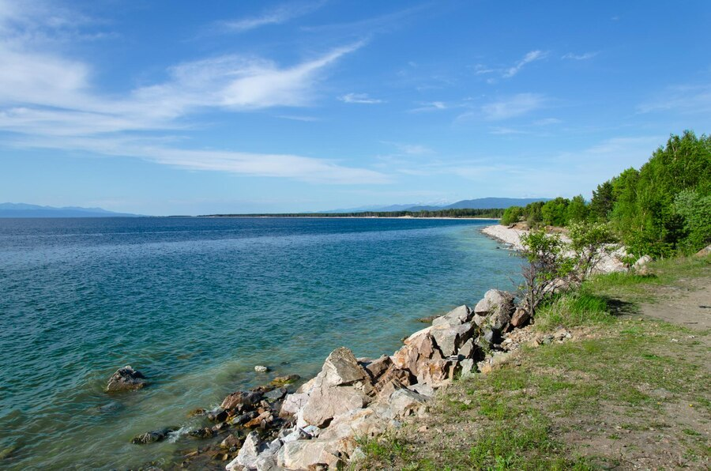
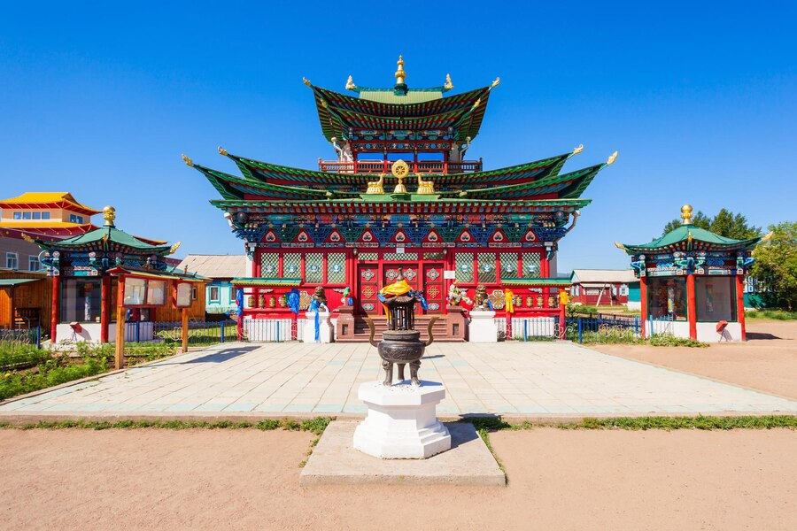

Республика Бурятия является субъектом Российской Федерации и входит в состав Дальневосточного федерального округа. Административно-хозяйственным и культурным центром республики является г. Улан-Удэ. Расстояние по железной дороге от г. Улан-Удэ до г. Москвы – 5519 км, а до Тихого океана – 3500 км.
Республика Бурятия образована 1923 году. Ее площадь составляет 351,3 тыс. кв. км. Бурятия расположена в южной части Восточной Сибири, южнее и восточнее озера Байкал. На юге Республика Бурятия граничит с Монголией, на юго-западе – с Республикой Тыва, на северо-западе – с Иркутской областью, на востоке – с Забайкальским краем.
На территории республики расположены 21 муниципальных района, 2 городских округа, 263 городских и сельских поселений.
Численность постоянного населения на 1 января 2013 г. составила 971,8 тыс. чел., средняя плотность населения – 3,0 чел. на 1 кв. км. Национальный состав республики, по данным переписи 2010 г., следующий:
На территории Республики Бурятия проживают представители коренных малочисленных народов:
от общей численности населения.
Климат Бурятии – резко-континентальный, с холодной зимой и жарким летом. Зима холодная, с сухим морозом и малым количеством снега. Весна ветреная, с заморозками и почти без осадков. Лето короткое, с жаркими днями и прохладными ночами, с обильными осадками в июле и августе. Осень наступает незаметно, без резкой смены погоды, в отдельные годы она бывает долгой и теплой. Средняя температура летом +18,5 0С, зимой –22 0С, а среднегодовая температура –1,6 0С. За год в среднем выпадает 244 мм осадков.
На территории Бурятии находится большая часть (около 60% береговой линии) озера Байкал – самого глубокого пресноводного озера в мире. Длина Байкала – 636 км, ширина – от 25 до 79 км. Общая длина береговой линии Байкала 2100 км, а площадь акватории – 31,5 тыс. кв.м. Максимальная глубина – 1637 м, средняя – 730 м. Байкал является природным резервуаром пятой части мировых запасов пресной воды высочайшего качества. В озере обитает 2500 различных видов животных и рыб, 250 из которых являются эндемиками.
Республика Бурятия – один из перспективных регионов России по туристско-рекреационному потенциалу. Развитию туризма способствуют удобное географическое положение, богатейшие историко-культурные и природные ресурсы, сложившаяся транспортная система, связывающая республику с регионами России и с зарубежными странами, стабильная экологическая ситуация, мирное сосуществование религий, растущая популярность Байкала.
Таежная, озерная, степная,
Ты добрым светом солнечным полна.
Цветущая от края и до края,
Будь счастлива, родная сторона.
Брусничный дух, черемухи дыханье,
Лилового багульника настой.
Я не дышу, а пью благоуханье
Моей земли, равнинной и лесной.
Прими, земля, сыновнее спасибо,
Святой водой Байкала угости,
Чтоб я обрел невиданную силу
Для дальнего нелегкого пути.
С тобой, земля, мы слиты воедино,
Моею стала и судьба твоя.
Поклон тебе от сердца, край родимый,
Любимая Бурятия моя!
О, мать земля!
Yнгын дайдаар, хангай тайгаар нэмжыгшэ
Үлзы Буряад — манай нангин үлгы.
Сэлмэг сарюун, сэнхир номин шарайшни
Сэдьхэлдэмнай хэзээдэшье зулгы
Эрхим хангал санзай шэнги агаарташ
Эршэ хүсөөр элсүүлэнгүй яалайб!
Эмтэй домтой мүнхын уһан аршаандаш
Эльгэ зүрхөө хүртүүлэнгүй яалайб!
Холын замда эхын ёһоор юрөөжэ,
Хүмүүн зондо хэтын жаргал хүсөөш.
Саяан хадын сэлгеэн амяар арюудхан,
Байгал далайн гэгээн долгёор сүршөөш.
Шэрүүн сагай ерээшье һаа дэлхэйдэ,
Шинии заяан замһаа хадуурхагүйл.
Эбтэй дорюун бүлын ёһоор жаргыш даа,
Энхэ Буряад манай нангин үлгы.
Эхэ нютаг!